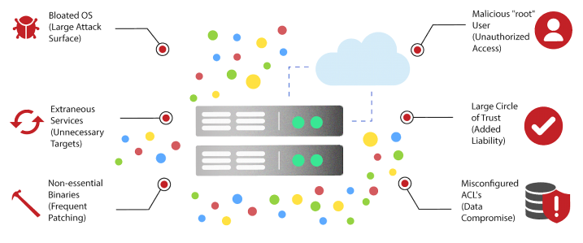

Securely Transfer, Share, and Archive
Your Most Sensitive Data
with Help of Google Cloud

Transfer your data securely
Transfer General (TG) uses cryptography to empower data owners to securely distribute or archive
highly-sensitive data no matter where the data resides - in a data center or the cloud.
There is no need to set up virtual private networks thereby lowering overall data transfer/distribution/archival
costs.
TG provides all the benefits of using Google Cloud storage while mitigating risks associated with it.
TG is an ideal solution for organizations that deal with in-scope data.
Challenges
#1
How to share highly-sensitive data securely with partners?
Transfer General helps data owners share highly confidential data securely with their partners no matter where
the data source is located. The data is encrypted before it leaves the secure confines of your network. A
Google Storage bucket acts as the distribution point. The data remains encrypted till it reaches its
destination. No VPN is required.
#2
How to archive in-scope data in a cloud storage bucket?
#3
How to transfer in-scope data across cloud platforms?
Typical Transfer Genera Deployment
Why Transfer General?
Transfer General empowers data owners to safely share the most sensitive data with a partner without setting
up a VPN.
Transfer General lowers corporate liability exposure by encrypting data before it leaves the secure confines
of your network.
Transfer General lowers data sharing/archiving costs by enabling organizations to use Google Cloud storage.
Only the encrypted data is stored in the cloud.
Transfer General helps to overcome corporate bandwidth limitations when sharing large data sets stored in a
data center server.
Use cases
When you attempt to share highly sensitive data stored on-premises in your data center, you face multiple
challenges - should you directly transfer the data to mitigate potential data security risk, or do you make
use of cloud storage so you have to upload the data only once and distribute it to multiple partners?
A direct transfer may not be possible depending on the size of the data and the corporate bandwidth at your
disposal.
On the other hand, using a cloud bucket may be very attractive, but you just don’t want to deal with an added
security risk.
That is where Transfer General comes in.
Transfer General will encrypt your data on-premises, allow you to maintain complete control over the data
encryption key, upload your encrypted data to a Google Storage bucket, and act as your distribution center.
Since only the encrypted data is uploaded into the bucket, you will eliminate any potential data security
issue stemming from a storage bucket misconfiguration or a rogue storage administrator.
You’ll be able to push the data stored in the bucket to multiple destinations where the data will be decrypted
for your intended audience.
You’ll be able to deny access to the data at any time with help of built-in cryptographic techniques.